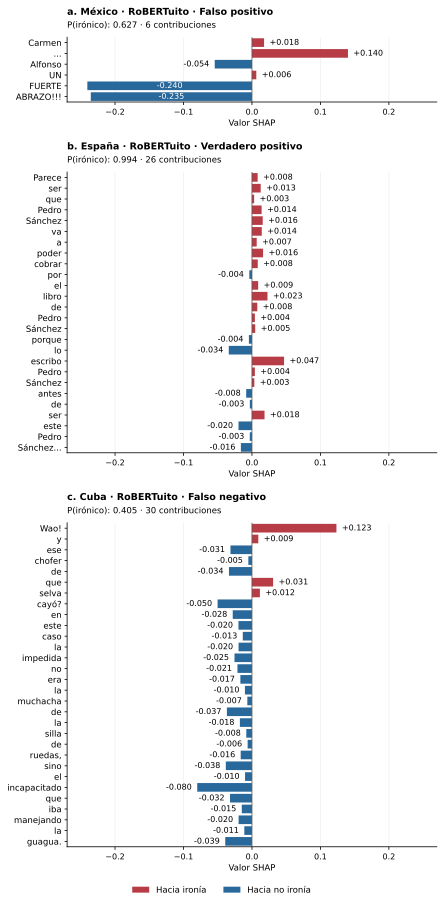

Las barras muestran todas las contribuciones por palabra guardadas para cada texto, en orden de aparición. Los valores están en la escala de probabilidad; las barras no incluyen el valor de referencia. Los ejes horizontales son comunes.
a. México: «Carmen ... Alfonso UN FUERTE ABRAZO!!!»
b. España: «Parece ser que Pedro Sánchez va a poder cobrar por el libro de Pedro Sánchez porque lo escribo Pedro Sánchez antes de ser este Pedro Sánchez...»
c. Cuba: «Wao! y ese chofer de que selva cayó? en este caso la impedida no era la muchacha de la silla de ruedas, sino el incapacitado que iba manejando la guagua.»
| Posición | Palabra | SHAP | En barras |
|---|---|---|---|
| 1 | Carmen | +0.017688 | Sí |
| 2 | ... | +0.140210 | Sí |
| 3 | Alfonso | -0.054347 | Sí |
| 4 | UN | +0.006351 | Sí |
| 5 | FUERTE | -0.240432 | Sí |
| 6 | ABRAZO!!! | -0.235429 | Sí |
| Posición | Palabra | SHAP | En barras |
|---|---|---|---|
| 1 | Parece | +0.008326 | Sí |
| 2 | ser | +0.012758 | Sí |
| 3 | que | +0.003180 | Sí |
| 4 | Pedro | +0.014113 | Sí |
| 5 | Sánchez | +0.015744 | Sí |
| 6 | va | +0.014353 | Sí |
| 7 | a | +0.006933 | Sí |
| 8 | poder | +0.016268 | Sí |
| 9 | cobrar | +0.008466 | Sí |
| 10 | por | -0.003853 | Sí |
| 11 | el | +0.009071 | Sí |
| 12 | libro | +0.022675 | Sí |
| 13 | de | +0.007775 | Sí |
| 14 | Pedro | +0.004302 | Sí |
| 15 | Sánchez | +0.004782 | Sí |
| 16 | porque | -0.004477 | Sí |
| 17 | lo | -0.033872 | Sí |
| 18 | escribo | +0.046893 | Sí |
| 19 | Pedro | +0.004260 | Sí |
| 20 | Sánchez | +0.003492 | Sí |
| 21 | antes | -0.008404 | Sí |
| 22 | de | -0.003090 | Sí |
| 23 | ser | +0.018382 | Sí |
| 24 | este | -0.019636 | Sí |
| 25 | Pedro | -0.003171 | Sí |
| 26 | Sánchez... | -0.016194 | Sí |
| Posición | Palabra | SHAP | En barras |
|---|---|---|---|
| 1 | Wao! | +0.123380 | Sí |
| 2 | y | +0.009281 | Sí |
| 3 | ese | -0.031365 | Sí |
| 4 | chofer | -0.005269 | Sí |
| 5 | de | -0.033578 | Sí |
| 6 | que | +0.030903 | Sí |
| 7 | selva | +0.011592 | Sí |
| 8 | cayó? | -0.050194 | Sí |
| 9 | en | -0.028074 | Sí |
| 10 | este | -0.019715 | Sí |
| 11 | caso | -0.013401 | Sí |
| 12 | la | -0.019555 | Sí |
| 13 | impedida | -0.025497 | Sí |
| 14 | no | -0.021168 | Sí |
| 15 | era | -0.016908 | Sí |
| 16 | la | -0.010255 | Sí |
| 17 | muchacha | -0.006747 | Sí |
| 18 | de | -0.036593 | Sí |
| 19 | la | -0.017633 | Sí |
| 20 | silla | -0.008276 | Sí |
| 21 | de | -0.006328 | Sí |
| 22 | ruedas, | -0.016443 | Sí |
| 23 | sino | -0.038191 | Sí |
| 24 | el | -0.010082 | Sí |
| 25 | incapacitado | -0.079925 | Sí |
| 26 | que | -0.032025 | Sí |
| 27 | iba | -0.014867 | Sí |
| 28 | manejando | -0.019518 | Sí |
| 29 | la | -0.011150 | Sí |
| 30 | guagua. | -0.039002 | Sí |